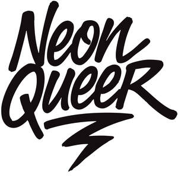

Trade Mark Journal No.2025/036 5 September 2025
UK00004193399 23 April 2025 (9,11,14,16,18,21,24,25,35)

- Class 9
- Phone cases; Cell phone cases; Mobile phone cases; Mobile telephone cases; Cellular telephone cases; Carrying cases for cell phones; Cell phone covers; Protective cases for cell phones; Cases for mobile phones; Carrying cases for mobile phones; Carrying cases for cellular phones; Protective cases for mobile phones; Mobile phone covers; Waterproof smartphone cases; Laptop cases; Mousepads; Computer mousepads; Mouse pads; Pads (Mouse -); Mouse mats; Computer mouse pads; Mats for use with a computer mouse; Flip covers for smartphones; Flip covers for smart phones; Flip covers for mobile phones; Flip covers for cellular phones; Sunglass cases; Cases for headphones; Snap gauges; Lens cases; Neon signs; Luminous electric signs; Signs, luminous; Electric signs.
- Class 11
- Electric lights; Wall lights; Decorative electric lighting apparatus; Electric apparatus for lighting; Electric lighting apparatus; Electric indoor lighting apparatus; Lighting apparatus; Apparatus for lighting; Electric lighting; Decorative lighting; Electric lighting installations; Electric indoor lighting installations; Indoor electrical lighting fixtures; Decorative lighting sets; Decorative lights; Electric light fittings; Electric lamps; Electric lighting fixtures; Electrical lighting fixtures; LED lighting assemblies for illuminated signs; LED underwater lights; LED light machines; LED lighting fixtures; Lighting fixtures; LED lighting installations.
- Class 14
- Lapel pins; Lapel pins [jewellery]; Watch cases.
- Class 16
- Posters; Mounted posters; Picture postcards; Postcards and picture postcards; Graphic art prints; Graphic prints; Paintings [pictures], framed or unframed; Picture books; Art prints; Colouring books; Coloring books; Coloring books for adults; Colouring pictures; Drawing books; Greeting cards; Greetings cards; Cards; Birthday cards; Holiday cards; Occasion cards; Blank cards; Post cards; Pencil cases; Art mounts; Wall decals; Art pictures; Photographic or art mounts.
- Class 18
- Animal apparel; Dog apparel; Bags for sports clothing; Holdalls for sports clothing; Duffle bags; Duffel bags; Duffel bags for travel; Tote bags; Carry-all bags; Carry-on bags; Crossbody bags; Drawstring bags; Bags; Toiletry bags; Luggage bags; Canvas bags; Carrying bags; Shoulder bags; Waterproof bags; Belt bags and hip bags; Wheeled bags; Messenger bags; Cloth bags; Kit bags; Gym bags; Courier bags; Overnight bags; Bum bags; Bags for travel; Sport bags; Cabin bags; Towelling bags; Carry-on suitcases; Hand bags; Makeup bags; Toilet bags; Grocery tote bags; Cross-body bags; Athletic bags; Canvas shopping bags; Beach bags; Sports bags; Bags for sports; Athletics bags; Make-up bags; Waist bags; Weekend bags; Evening bags; Dog collars; Cat collars; Collars for pets; Raincoats for pet dogs; Pet clothing; Dog leashes; Collars for cats; Dog clothing; Horse collars; Animal leashes; Collars for animals; Collars of animals; Dog coats; Pet leads; Clothing for pets; Pets (Clothing for -); Clothing for dogs; Key cases of leather; Clutch bags; Leather bags; Sling bags; Travel bags; Clutch purses; Sling bags for carrying infants; Attaché bags; Wheeled shopping bags; Hip bags.
- Class 21
- Mugs; Cups and mugs; Coffee mugs; Ceramic mugs; Earthenware mugs; Porcelain mugs; Mugs of porcelain; Glass mugs; China mugs; Mugs of china; Insulated mugs; Travel mugs; Mugs made of porcelain; Mugs made of earthenware; Drinking mugs made of porcelain; Mugs made of china; Vacuum mugs; Mugs made of plastic; Mug sleeves; Mugs made of ceramic materials; Drinkware; Teapots; Coffee cups; Coasters (tableware); Porcelain coasters; Mugs made of fine bone china; Tea cups; Mugs, not of precious metal; Tea pots; Cups made of earthenware; Cups made of pottery; Insulated bottles [flasks]; Souvenir plates; Water bottles; Plastic water bottles; Aluminum water bottles; Covers for water bottles; Plastic water bottles [empty]; Aluminum water bottles, empty; Drinking bottles.
- Class 24
- Towels; Bath towels; Bathroom towels; Tea towels; Beach towels; Terry towels; Kitchen towels of cloth; Towels of textiles; Dish towels; Hooded towels; Towels of textile; Towels [textile]; Towels [textile] for the beach; Dish towels for drying; Large bath towels; Bath wrap towels; Hand towels; Face towels; Bath linen; Household linen, including face towels; Tea cloths; Children's towels; Duvet covers; Covers for eiderdown and duvets; Duvets; Covers for duvets; Pillow shams; Quilted blankets [bedding]; Pillowcases [pillow slips]; Bed linen and blankets; Eiderdown covers; Silk bed blankets; Textile covers for duvets; Ticks (mattress and pillow coverings); Pillow covers; Bed blankets; Blankets (Bed -); Comforters [covers]; Covers for pillows; Sofa blankets; Bed linen; Linen for the bed; Linen (Bed -); Pillowcases; Comforters; Comforters for beds; Bed covers; Eiderdowns; Bed clothes and blankets; Bed blankets made of cotton; Bed warmer covers; Bed quilts; Sofa covers; Bedsheets; Fitted bed sheets; Pillow slips; Bed linen and table linen; Cotton blankets; Flat bed sheets; Bed covers of paper; Eiderdowns [quilts]; Coverlets [bedspreads]; Futon quilts; Silk blankets; Flannel [fabric]; Bed coverings; Infants' bed linen; Bed clothes; Fabric curtains; Bedspreads; Linen [fabric]; Quilt covers; Covers for cushions; Cushions (Covers for -); Cot blankets; Flannel; Cot sheets; Woollen blankets; Terry linen; Bedsheets of leather.
- Class 25
- Clothing; Sportswear; Athletic clothing; Clothing for sports; Sports clothing; Ready-to-wear clothing; Parts of clothing, footwear and headgear; Men's clothing; Embroidered clothing; Leisure clothing; Casual clothing; Shorts [clothing]; Footwear for sports; Sports footwear; Footwear; Quilted jackets [clothing]; Outerwear; Clothes for sports; Linen clothing; Footwear for women; Women's clothing; Ready-made clothing; Footwear for men; Footwear for sport; Footwear [excluding orthopedic footwear]; Jackets (Stuff -) [clothing]; Leisure footwear; Casual footwear; Beach clothing; T-shirts; Tee-shirts; Pyjamas [from tricot only]; Hats; Beanie hats; Woolly hats; Baseball hats; Fashion hats; Baseball caps and hats; Sports caps and hats; Sun hats; Scarves; Scarfs; Headbands [clothing]; Aprons [clothing]; Headwear; Headgear; Flip-flops; Thong sandals; Board shorts; Flip-flops for use as footwear; Deck shoes; Vest tops; Fleece tops; Sweat bottoms; Crop tops; Pajama bottoms; Sandals and beach shoes; Fleece shorts; Wedge sneakers; Head wear; Baby bodysuits; Baby clothes; Pyjamas; Nightwear; Nightshirts; Nightgowns; Windproof jackets; Wind-resistant jackets; Rainproof jackets; Fleece jackets; Windproof clothing; Caps [headwear]; Caps being headwear; Caps; Canvas shoes; Shoes; Rubber shoes; Basketball shoes; Athletic shoes; Tennis shoes; Volleyball shoes; Running shoes; Slip-on shoes; High-heeled shoes; Snowboard shoes; Sneakers; Beach shoes; Sport shoes; Sneakers [footwear]; Athletics shoes; Tracksuit tops; Baseball shoes; Hiking shoes; Children's clothing; Women's shoes; Cyclists' clothing; Ladies' clothing; Girls' clothing; Childrens' clothing; Babies' clothing; Infants' clothing; Men's and women's jackets, coats, trousers, vests; Boys' clothing; Children's footwear; Jackets being sports clothing; Knitwear [clothing]; Denims [clothing]; Leather clothing; Silk clothing; Gloves [clothing]; Clothing for leisure wear; Bottoms [clothing]; Thermal clothing; Capes (clothing); Clothing for children; Playsuits [clothing]; Hoods [clothing]; Water-resistant clothing; Children's wear; Waterproof clothing; Latex clothing; Clothes; Clothing for infants; Trunks being clothing; Clothing for babies; Stuff jackets [clothing]; Clothing for cycling; Infant clothing; Woven clothing; Bodies [clothing]; Tops [clothing]; Ties [clothing]; Rainproof clothing; Clothing for cyclists; Clothing for men, women and children; Ladies' footwear; Dance clothing; Clothing for wear in wrestling games; Weatherproof clothing; Coats (Top -); Tops; Tank tops; Baselayer tops; Hooded tops; Rugby tops; Baby tops; Yoga tops; Cycling tops; Jogging tops; Visors [headwear]; Beanies; Ski hats; Wristbands [clothing]; Sports clothing [other than golf gloves]; Headbands; Jackets [clothing]; Hoodies; Hooded sweatshirts; Sweatshirts; Sweatpants; Hooded sweat shirts; Short-sleeved T-shirts; Hooded pullovers; Turtleneck pullovers; Turtleneck sweaters; Mock turtleneck shirts; Long-sleeved shirts; V-neck sweaters; Short-sleeved shirts; Short-sleeve shirts; Fleece pullovers; Fleece vests; Sleeveless pullovers; Sleeveless jackets; Mock turtleneck sweaters; Leggings [trousers]; Knit jackets; Sleeveless jerseys; Bib shorts; Sleeved jackets; Sweatshorts; Bib tights; Men's dress socks; Polar fleece jackets; Moisture-wicking sports pants; Hooded bathrobes; Weatherproof pants; Pants; Sweat shirts; Casual shirts; Trousers shorts; Turtleneck tops; Jeans; Snowboard trousers; Romper suits; Jogging pants; Printed t-shirts; Sweaters; Jerseys [clothing]; Gloves for apparel; Handwarmers [clothing]; Pajamas; Yoga shirts; Gym shorts; Long sleeve pullovers; Sweat pants; Sleep shirts; Men's underwear; Waterproof pants; Shorts; Sweat shorts; Snow pants; Night shirts; Padded jackets; Pullovers; Sports garments; Headbands for clothing; Fishing clothing; Athletics footwear; Mufflers [clothing]; Clothing for skiing; Shoes for leisurewear; Sports bras; Moisture-wicking sports bras; Sports pants; Padded shorts for athletic use; Sports jerseys and breeches for sports; Padded shirts for athletic use; Padded pants for athletic use; Moisture-wicking sports shirts; Sports vests; Fitted swimming costumes with bra cups; Sports shoes; Sports wear; Sports bibs; Sports singlets; Sports shirts; Sports jackets; Sports socks; Boots for sports; Sports jerseys; Sports headgear [other than helmets]; Sports caps; Articles of sports clothing; Footwear not for sports; Clothes for sport; Sport shirts; Sports [Boots for -]; Sport stockings; Footwear for use in sport; Swimming trunks; Swim trunks; Bathing trunks; Trunks (Bathing -); Trunks; Trunks [underwear]; Swimming suits; Swimming costumes; Swimming caps; Swim shorts; Swim briefs; Swimming caps [bathing caps]; Swim suits; Swim caps; Swim wear for children; Swimsuits; Knit tops; Halter tops; Tube tops; Warm-up tops; Knitted tops; Chemise tops; Polo knit tops; Maternity tops; Baselayer bottoms; Tracksuit bottoms; Jogging bottoms [clothing]; Jogging bottoms; Stretch pants; Leggings [leg warmers]; Dressing gowns; Gowns; Night gowns; Bodysuits; Sleepsuits; Rompers; Boxing shorts; American football pants; Combative sports uniforms; Athletics hose; Boots for sport; Basketball sneakers; Athletic tights; Clothing for gymnastics; Gym suits; Bathing suits; Bathing suits for men; Training suits; Ski suits; Jump Suits; Leisure suits; Jumper suits; Play suits.
- Class 35
- Online retail store services in relation to clothing; Online retail store services relating to clothing; Online retail services relating to jewelry; Online retail services relating to clothing; Online retail services relating to handbags; Online retail services relating to luggage.
Nicholas Fell